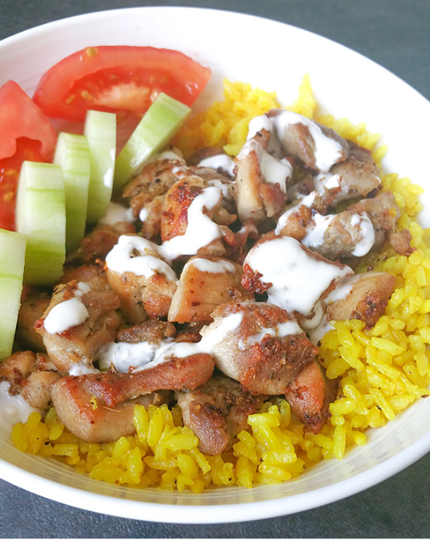

Halal Cart Chicken & Turmeric Rice

Halal Cart Chicken & Turmeric Rice
Seared and crispy halal-style chicken on a bed of fluffy golden rice, with a tangy white sauce.
Ingredients
Chicken
- 1 lb boneless, skinless, chicken thigh (raw) | 544 calories
- 1 tbsp white vinegar | 3 calories
- 1/2 tbsp dried ground oregano | 9 calories
- 1/4 tsp ground coriander | 3 calories
- 1/2 tsp garlic powder | 5 calories
- 1/2 tsp salt | 0 calories
- 1/2 tsp ground black pepper | 3 calories
- 2 tbsp olive oil | 248 calories
Rice
- 1 tbsp unsalted butter | 102 calories
- 1/2 tsp turmeric | 4 calories
- 1/4 tsp ground cumin | 2 calories
- 1 cup uncooked rice (I used Kokuho rose) | 640 calories
- 1/4 tsp salt (or to taste) | 0 calories
- 1 1/2 cups chicken broth (homemade or low-sodium or gluten-free) | 129 calories
White Sauce
- 1/4 cup plain whole milk yogurt | 40 calories
- 1/4 cup mayonnaise | 229 calories
- 1/2 tbsp sugar | 24 calories
- 1 tbsp white vinegar | 3 calories